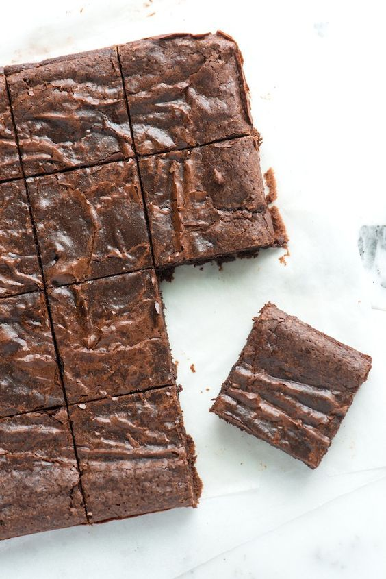

Brownies

Description
These brownies only require one bowl and come together in minutes!
They're rich, dense, and fudgy with a gorgeous crinkly top that put boxed mixes to shame.
Ingredients
- 10 tbs of butter
- 1 1/4 c granulated sugar
- 3/4 c + 2 tbs unsweetened cocoa powder
- 1/4 rounded tsp kosher salt
- 1 tsp vanilla extract
- 2 large cold eggs
- 1/2 c all-purpose flour
- 2/3 c chopped walnuts or pecans (optional, but not really)
Steps
- Position an oven rack in the middle of the oven and heat to 325 degrees F. Line the bottom and sides of an 8-inch x 8-inch square baking pan with parchment paper or aluminum foil, leaving an overhang on opposite sides to help remove the baked brownies from the pan.
- Prepare a double-boiler by filling a medium saucepan with water about 2 inches deep. Heat the water until barely simmering.
- Combine the butter, sugar, cocoa powder, and salt in a medium heat-safe bowl. Rest the bowl over the simmering water. If the bottom of the bowl touches the water, remove a little water from the saucepan.
- Stir the mixture occasionally until the butter has melted and the mixture is quite warm. Don’t worry if it looks gritty; it will become smooth once you add the eggs and flour.
- Remove the bowl from the saucepan, and set aside for 5 minutes or until it is only warm, not hot.
- Stir in the vanilla.
- Add the eggs, one at a time, stirring vigorously after each one.
- When the batter looks thick and well blended, add the flour. Use a spoon to beat the flour into the batter until it is very thick and pulls away from the sides of the bowl.
- Stir in nuts if using.
Bake Brownies
- Spread the batter evenly in the prepared pan.
- Bake the brownies until the edges look dry and the middle looks slightly underbaked; 20 to 30 minutes. You can test doneness by inserting a toothpick into the center. The brownies are finished baking if it comes out with a few moist crumbs attached.
- Cool completely before removing from the pan — this step is essential and helps the brownies set. Cut into 16 squares.
Home